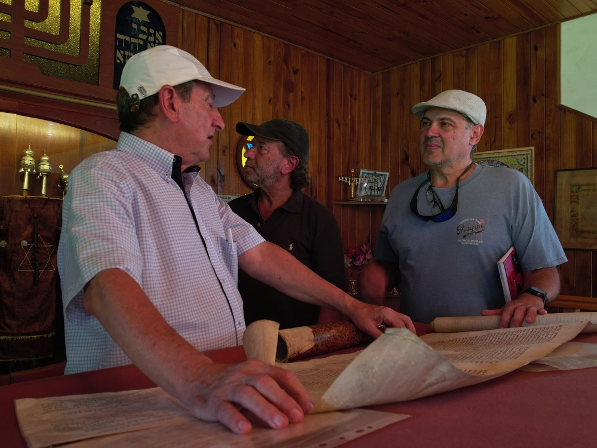

Descripción del proyecto
Se actualizó y implementó el Plan Rincones con Historia, incorporando al alcance original (centrado en el corredor central provincial) las localidades del corredor del río Uruguay y del norte provincial, consolidando una estrategia integral para un territorio de 32.730 km² y una población cercana a 460.000 habitantes. Asimismo, se generaron resultados clave para el posicionamiento y la dinamización turística: el diseño participativo de la marca “Colonias Judías de Entre Ríos. Una estrella, miles de historias”, la elaboración de un Catálogo de Experiencias Turísticas y el desarrollo conceptual de “La Gran Fiesta de la Colectividad Judía Entrerriana”. El proceso involucró a más de 150 líderes y actores comunitarios, Planificación y Desarrollo fortaleciendo la apropiación territorial, la articulación público-comunitaria y la puesta en valor del patrimonio cultural como motor de desarrollo local.
← Volver al portfolio